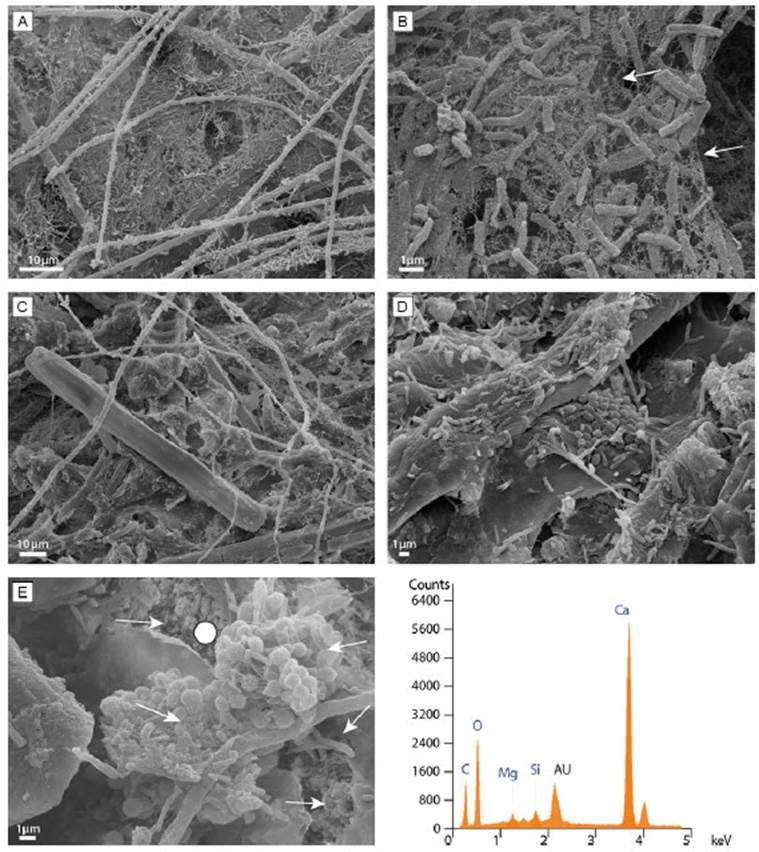

Evolving controls on mineralization in Patagonian microbial mats as inferred by water chemistry, microscopy and DNA signatures

Resumo em Português
Investigações recentes em microbialitos vivos forneceram dados significativos que têm sido fundamentais para desvendar o papel dos vários processos bióticos e abióticos que contribuem para seu desenvolvimento. Apesar desses esforços, separar o impacto e a magnitude desses processos permanece uma tarefa difícil. Atualmente, a Bacia de Maquinchao, no nordeste da Patagônia, Argentina, contém tanto microbialitos fósseis quanto vivos, fornecendo uma oportunidade única para investigar o impacto de parâmetros intrínsecos e extrínsecos na precipitação de carbonatos.Investigações iniciais (verão austral de 2011) em microbialitos vivos concluíram que a organomineralização estava relacionada tanto à atividade fotossintética na camada mais superficial (verde) quanto à redução de sulfato na parte inferior (bege). Investigações de campo na mesma área quatro anos depois mostraram que as lagoas anteriormente contendo tapetes ativos abundantes haviam secado, revelando em geral a ausência de aglomerados globulares estruturados de minerais nos tapetes microbianos. São apresentadas investigações em microescala utilizando microscopia óptica e MEV, junto à diversidade de sequências do gene 16SrRNA e aos parâmetros físico-químicos das águas hospedeiras, realizadas em amostragens sazonais sucessivas entre novembro de 2015 e março de 2018.Os resultados indicam que parâmetros extrínsecos — especialmente a evaporação — podem desempenhar um papel mais substancial na precipitação desses carbonatos do que anteriormente proposto. As diferenças ambientais entre 2011 e 2015, nas condições meteorológicas, na atividade vulcânica regional e nos depósitos associados na bacia, são analisadas e provavelmente responsáveis pela diminuição dos processos de mineralização. Esses resultados exigem cautela ao interpretar o grau de impacto biológico na formação de microbialitos no registro geológico, uma vez que fatores extrínsecos locais podem ter um impacto variável ao longo do tempo, alternando a precipitação mineral de biótica para abiótica e vice-versa, o que pode ser indistinguível em microbialitos fossilizados.